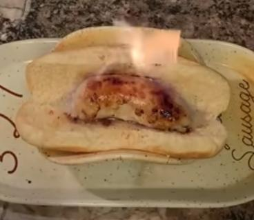

The Fire Sausage

Description
The fire sausage is the least creative among all the sausages in this website.
It sort of resembles an ordinary sausage that's on fire. This is the main reason why it's not as loved as the other ones on this list.
Ingredients
- High Quality Sausage Casing
- Fireball Cinnamon Whisky
- Main Sausage Filling of Your Choosing
- Two Tablespoons Olive Oil
Steps
- Fill the sausage casing with your filling(you might wanna use a meat grinder depending on your filling choice)
- Also add fireball into the casing and tie the open end
- Oil your pan and put the stove on high heat
- Put your sausage on the pan and start cooking(be careful not to start a fire)
- Cook until the filling inside is ready to be eaten
- Take the sausage off the heat
- As always you can present it however you like but I'd recommend putting it in a bun with more fireball and lighting it on fire